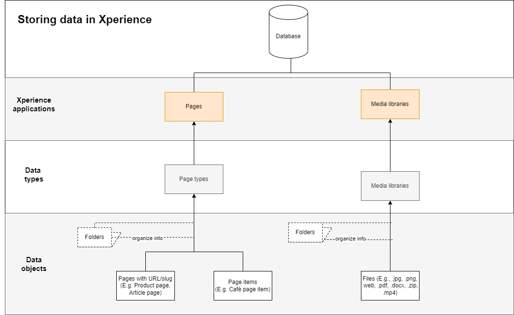
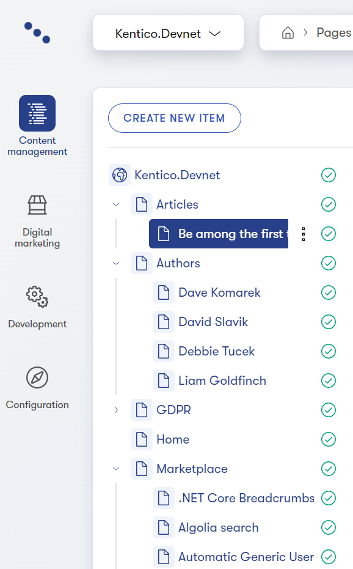
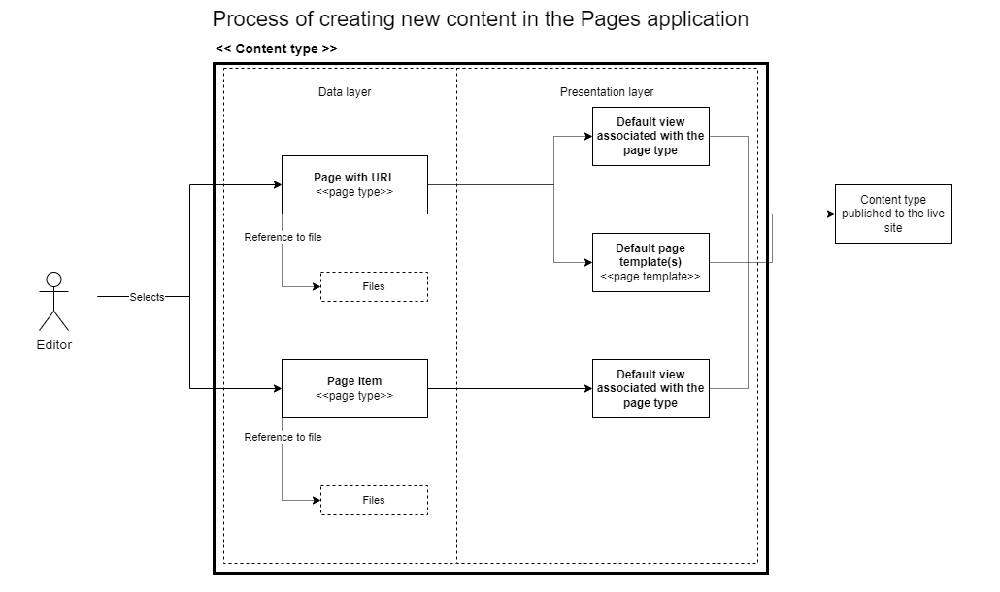
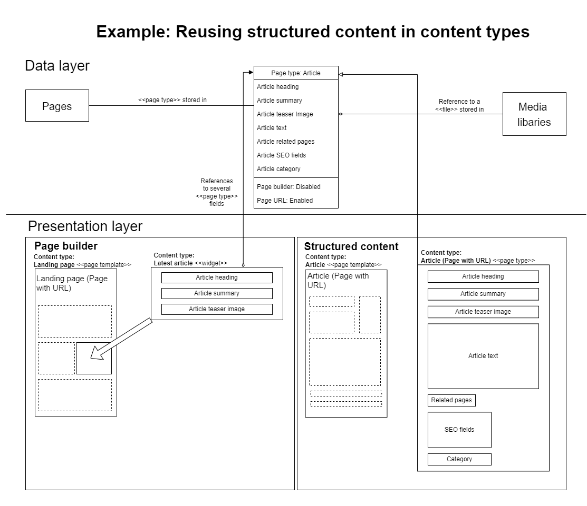

KXO Storing content in Xperience
This is a working version of the content modeling document. Any updates, fixes, improvements need to be performed in the kxedit version of the docs https://docs.xperience.io/kxedit/latest/developers-and-admins/development/content-modeling
This page covers the options for creating, storing, categorizing, and managing content in Kentico Xperience.
When planning an Xperience project, it's important to carefully consider all possible options of content storage offered by the system and choose the approach most suitable for your project's requirements.
In each of the following sections, you can read about the benefits of a particular approach, and find links to relevant pages in our documentation:
TOC
Creating and managing content
From a high-level perspective, you can look at creating and managing content in Xperience in two different ways:
|
Content is created |
Content is managed |
Description |
|
Inside Xperience |
Inside Xperience |
The Xperience database is the single source of truth for all content (e.g., various marketing materials, company-specific information, or product-related documents). Before editors start producing content, developers must prepare relevant data structures (i.e., content objects) in the administration. |
|
Outside Xperience |
Outside Xperience |
This combination is typically used for content that needs to be managed using a specific external system, e.g., various ERP or PIM solutions for managing product catalogs. The content is either synchronized to Xperience using custom-built functionality that consumes the source's API and ensures the content is displayed on Xperience website. Note that this option introduces several competing content management systems into the setup. Duplicating content management systems can cause complications. For example, when content editors find an error on the live website, it may be difficult to identify where they can edit this specific content. |
Recommendations - Creating and managing content in Xperience
Storing and managing content directly in Xperience is the recommended option for most projects.
Storing content in Xperience ensures there’s a single source of truth for content distribution across different channels. Moreover, editors know where the content they are responsible for resides.
Storing content in Xperience also prevents synchronization errors with third-party integrations, and ensures that editors always have the latest version of the content available in one place.
We also recommend storing content in Xperience if editors want to leverage online marketing features, such as content personalization or segmenting your website's audience to contact groups for various marketing activities.
If you need to display content that is stored in a 3rd party solution on an Xperience website, make sure to provide sufficient project documentation that explains the architecture decisions and helps editors and marketers with managing their website content.
For managing larger projects (or projects that are already live), we recommend using a staging environment rather than directly editing the content in production.
This is a working version of the content modeling document. Any updates, fixes, improvements need to be performed in the kxedit version of the docs https://docs.xperience.io/kxedit/latest/developers-and-admins/development/content-modeling
Types of content in Xperience
Similar to a general decision on where to store your content–whether in or outside Xperience–you can look at the content of your website from two perspectives – in what format the content is stored and how it's displayed on the website.
Content from a storage perspective |
Structured content
|
Page builder content
|
Files
|
|
From presentation perspective |
|
Content types with URL
|
|
Content types without URL
|
|
The following diagram overviews data storing options in Xperience.

Pages
Pages are represented in a visual hierarchical structure called the content tree and managed in the Pages application.

Content types used in the content tree are based on page types. Page types define the basic structure of each content type and serve as a blueprint for every content item (i.e. page) created with this page type. For example, every article made from the Article page type will have the same properties.
However, even though the name "page type" suggests it, not every item in the content tree needs to represent an actual page on the website. From this point of view, editors can create three types of pages in the Pages application:
|
Pages with dedicated URLs/slugs |
|
|
Page items |
|
|
Folders |
|
Content tree-based routing
Depending on the website implementation, the content tree-based routing feature can generate page URLs based on their position within the content tree hierarchy. Learn out more about features related to pages with URLs:
Implementing routing
Managing page URLs
Settings - URLs and SEO
Rewriting application URLs
Editing metadata of pages
The following diagram shows editors' options when adding content in the Pages application. Note that data used within the content type can be stored also in other data types (Xperience applications) and referenced in the page type. You'll learn about the presentation layer, including the options for page templates, on the following page.

This is a working version of the content modeling document. Any updates, fixes, improvements need to be performed in the kxedit version of the docs https://docs.xperience.io/kxedit/latest/developers-and-admins/development/content-modeling
Page content format in pages application
You have two options when deciding how page content gets stored in Xperience: Page Builder and structured content.
|
|
Page Builder |
Structured pages |
|
Advantages |
|
|
|
Recommended usage |
|
|
Structured content
Structured content allows you to store content without the need to focus on its layout. Editors manage page content on the Content tab in the Pages application. They provide text, images, media files, and other assets in a standardized format using fields. The structure and type of the content editors' input are based on fields, which are defined for individual page types.
From a developer's perspective, structured content is strongly typed and stored in dedicated database tables per page type. Developers can easily retrieve this data via the API and display it on the live site application according to project requirements. Alternatively, developers can retrieve and display the content in various channels, such as mobile applications or third-party services.
The structured format of the content input doesn't dictate what the content is presented uniformly through a predefined layout. Editors can use predefined default templates that developers bound to a specific page type. Or, they can use page builder widgets that add design information to their data stored in page types.
These widgets will contain a "selector" functionality that editors use to pick the intended content item from the content tree. Existing selectors allow editors to select any item from the content tree, so when creating the content repository for reusable content, make the content items easy to find and navigate. You can also consider customization to the Page selector and restrict its use to a specific page type. [[LINK to docs to show ItemPageModifier]]
When to store data in structured content?
Structured content in pages is most suitable for scenarios where you want to:
Display a large number of pages with a similar structure of content, and you do not require control over the design on the editor side. Examples may include articles, blogs, news, or company offices.
Make use of reusable content that editors plan to display in different places on the website or share through other channels. Examples may include banners, videos, FAQs, testimonials, etc.
Recommendations - Structured content
Structured content is the preferred way of building content on Xperience websites. It provides editors with the means to create and store quality, reusable and future-proof content.
We recommended using structured content for:
Pages with non-changing content structure combined with page templates, such as articles, blogs, news, listing pages, biographies, or company offices.
Creating a content repository for content stored within the tree that will be (or has the potential to be) used in multiple places on the website or via different channels, for example, for the core content identified in the content strategy audit. Developers can build a functionality that allows editors to reuse this content through other structured pages, page builder widgets, or linked pages (see below). For example, contact information, FAQs, videos, testimonials, etc.
Page builder widgets that require a specific type of content (e.g., a hero banner, cards, tabbed sections), and are intended to be reused (e.g., in digital marketing campaigns).
Page builder content
Page Builder is a user-friendly interface where non-technical users manage the content and layout of the pages using configurable page components, such as widgets and sections.
Editors work with the page builder on the Page tab in the Pages application. They can build entire pages (or their sections) and experiment with different layouts and designs of the page, and immediately see the results. Equipped with the widgets and sections, editors can layout content without the need to ask developers for help every time they want to build a new page or adjust the design of an existing page.
Developers prepare Page Builder components based on project requirements, and they can custom-tailor each component to fit their client's needs. Developers still can retrieve the content of Page Builder widgets in the code, but it is not as convenient as retrieving structured content.
Page Builder was not designed to create whole websites. The content that editors add to the widger is stored per this widget instance. This makes the content hard to work-with for developers. Also, such content is harder to reuse which can potentially lead to content duplicity and management nightmares.
When you are defining where and when to use page builder and it is important to consider the following points:
Frequent changes of design are not required on most pages on a site. For such pages, it is more convenient to define only the content in Xperience and let the live site application provide the presentation layer.
Giving content editors, the main target audience of the feature, the ability to alter the layout of the entire site could be dangerous for security and design reasons. If Page Builder isn't limited to specific pages, content editors could change something without realizing the full impact.
This is a working version of the content modeling document. Any updates, fixes, improvements need to be performed in the kxedit version of the docs https://docs.xperience.io/kxedit/latest/developers-and-admins/development/content-modeling
When to store data in Page Builder
Page builder content in pages is most suitable for scenarios when you:
Create one-off, quickly degrading content that marketers need to adjust in WYSIWYG style.
Don't need to reuse the content in more than one place.
Recommendations - Page builder
In general, use the page builder as a tool to layout and design the content stored in a structured format. This approach helps editors focus on creating quality content and reuse it where needed.
We recommend using page builder content for:
Parts of the page to allow for content personalization.
For example above-the-fold content on high-traffic pages (home page), prominent areas on listing pages (articles page), project-specific category or product-category pages, user profile pages, or shopping cart checkout pages.
Entire pages when creating one-off marketing campaign pages.
When working with the page builder, you can use the Rich text and Form widgets provided out-of-the-box.
Combining Page Builder and structured content
Page Builder and structured content are not mutually exclusive and can be used on the same page. When building websites, you should combine Page Builder with structured content to leverage the full potential of both approaches. When you define your content model, consider situations in which you can store the data in a structured format and use Page Builder widgets or sections to present this content. Your widgets and sections can contain properties that allow editors to add design information (size, colors, and other content behavior).
In general, your editors will benefit when you combine both approaches:
Use page builder for styling structured content
Adding page builder's editable areas to templates that display structured data to help with content personalization.
The following diagram shows the benefit of storing data separately from their presentation. From a user perspective, editors can create their data once and reuse it when needed.
Article ( content type ).
The editor creates a new page using an Article page type and selects a page template they want to use. The Article content type has the URL feature enabled to generate the page's URL and make it navigable by website visitors. Data input via the Content tab is stored in the "Article" page type, and data presentation (layout and styling) is handled via the page template . The Teaser image field in the Article page type references a file stored in a Media library; it doesn't store the file itself.
Landing page ( content type )
The editor creates a new page using the Landing page page type and selects a respective page template. The Landing page page type has both the URL and Page builder features enabled. Using the Latest article widget , the editor displays some of the data stored in the Article: the Article's Name, Teaser image, and Summary. The widget references the selected Article using its GUID. If the widget has any properties that set design information for the displayed data, their configuration applies separately for each widget.

Media files
Media play an essential part in defining the user experience on a website. Besides images and videos, companies often need to manage product documentation, legal contracts, share packages, and so on. Xperience allows you to upload files (e.g. GIF, JPG, SWF, PDF, XLS, DOC, ...) to the Xperience database or file system and manage them as any other content.
You can manage files in Xperience using the built-in Media libraries application.
This is a working version of the content modeling document. Any updates, fixes, improvements need to be performed in the kxedit version of the docs https://docs.xperience.io/kxedit/latest/developers-and-admins/development/content-modeling
Media libraries
Media libraries provide a centralized repository for file storage and allow for easy distribution over Content Delivery Networks (CDNs). Editors can upload their files to the system and reuse them in different content types across the website from the administration. Developers can use the out-of-the-box Media file selector form component when they define content types that usually contain some media element, e.g., articles, banners, videos, etc. When an editor selects the file they want to display on the live site, they create a reference the file stored in the media library. Developers can access media library files without querying the database, reducing overhead. This makes media libraries an ideal solution for storing all website files in one central location.
Files stored in media libraries aren't limited only as parts of content types. Editors can reuse the files from the website to other marketing channels, and share the file's URL with external users if it's required. Files stored in media libraries can serve to create image or video galleries. Or, editors can just use the media libraries for managing large amounts of files of different types that the business works with.
Avoid using media libraries if you need to secure the files, as the files are always accessible under their URL.
Recommendations - Media libraries
Using media libraries is the recommended approach for storing files. We namely recommend storing your website’s files in media libraries when:
• You are keeping a large number of files or storing large files.
• You need to serve the files from a CDN.
• You plan to reuse the files in other channels.
Based on the size of the editing team and the way the team works, we recommend creating a more granular system of media libraries rather than creating a massive media library with a complex subfolder structure.
You have learned about the options of storing data in Xperience. On the Designing content in Xperience page, you’ll learn about different approaches to designing this data and presenting it in your web application.
This is a working version of the content modeling document. Any updates, fixes, improvements need to be performed in the kxedit version of the docs https://docs.xperience.io/kxedit/latest/developers-and-admins/development/content-modeling